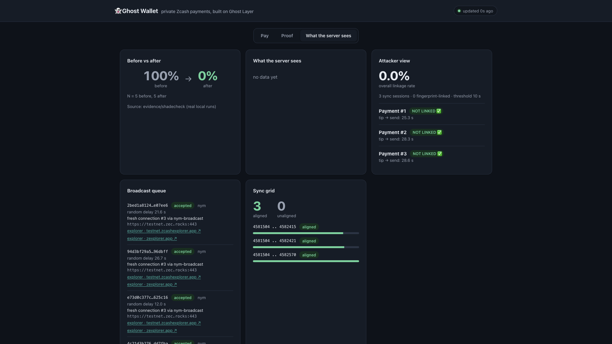
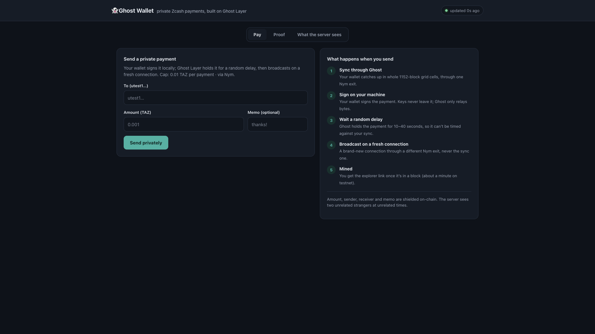
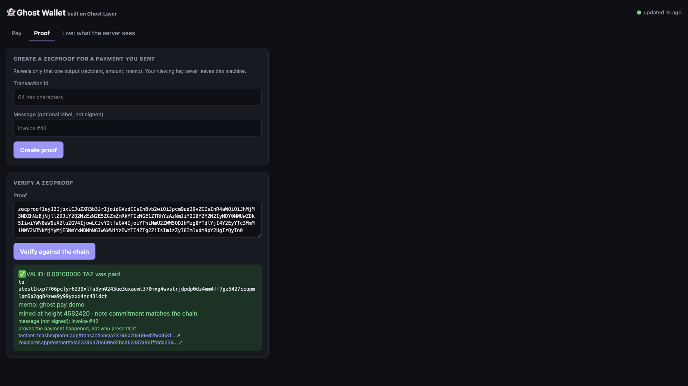
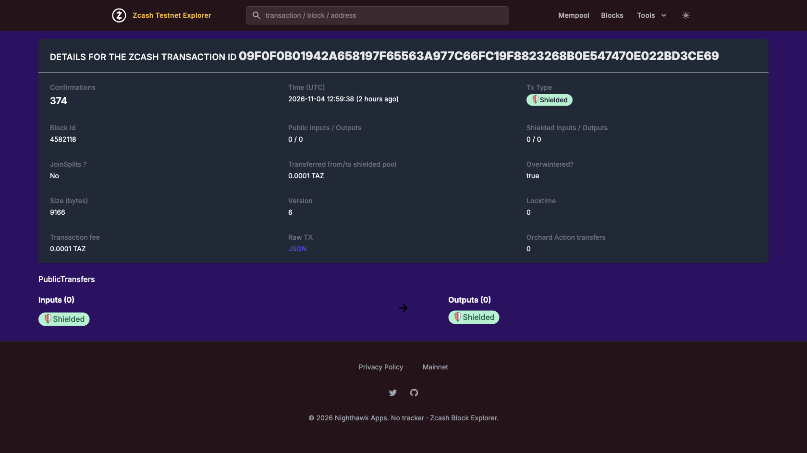

Split broadcast
Every payment leaves on a brand-new connection, never the one your wallet synced on.
0 / 5 linked by connection
Network privacy for Zcash light wallets
Your light-wallet server sees your IP, and when your wallet syncs then sends seconds later, it knows the payment is yours. Ghost Layer is a local gateway that breaks that link, with no changes to your wallet.
Capabilities
Zcash already shields sender, receiver, amount and memo. Ghost Layer protects everything around the payment that the server can still observe.
Every payment leaves on a brand-new connection, never the one your wallet synced on.
Each payment waits a random 10–40 s (minutes in privacy mode). Restart-safe, sent exactly once.
The server only sees whole 1152-block cells, Nym’s network-wide rule, not your exact sync range.
Sync and send exit through two different Nym nodes. If Nym is down, Ghost stops instead of leaking your IP.
Process
Point any lightwalletd-compatible wallet at 127.0.0.1:9067, or send with one command. Your keys never leave your wallet.
Through one Nym exit, in cells shared with every other wallet.
Your wallet signs. Ghost only relays bytes, never keys.
So the payment can’t be timed against your sync.
Through a different exit. The server sees two strangers.
Evidence
We played the curious server, logged everything it could see, and tried to link each real payment back to a wallet.
REAL RUNS · ZCASH TESTNET NU7| What the server tried | Without | With Ghost | + Nym |
|---|---|---|---|
| Payment sent seconds after sync | 5 / 5 | 0 / 5 | 0 / 5 |
| Sessions chained by block ranges | 4 / 5 | 0 / 5 | 0 / 5 |
| Same IP for sync and send | 5 / 5 | 5 / 5 | 0 / 5 |
| Median time, tip to send | 3.0 s | 22.4 s | 32.4 s |
Ghost Wallet
Send privately, prove one payment, and watch exactly what the server can see. It runs on your machine and talks to your own wallet.




Stack
No wallet changes, no new server. Ghost Layer sits between the pieces you already use.
or any lightwalletd client
testnet.zec.rocks:443
two exits, fail closed
network-wide cell rule
NU7, Ironwood, ZIP 244
read-only tools by default
independent before/after
prove one payment
Security
Every guarantee is enforced in code, and every gap is written down.
Ghost never reads seeds or spending keys. It passes your wallet a file path, nothing more.
If a Nym client is down, payments wait. There is no silent fallback to your real IP.
Gateway and app listen on 127.0.0.1, with a per-run token and loopback-host checks.
The chain still shows a payment happened; your ISP sees you use Nym. We say so.
Developers
Five crates on crates.io, a stable JSON contract tested against real output, and an MCP server.
the ghost CLI: pay, proof, dashboard, mcp
ghost-layer-coregrid planner, broadcast scheduler
ghost-layer-transportdirect TLS and Nym SOCKS5
ghost-layer-gatewaylightwalletd-compatible gateway
ghost-layer-attackerlinkage heuristics, the attacker
llms.txt · AGENTS.mdcurrent NU7 facts for coding agents
# install (prebuilt, or: cargo install --locked ghost-layer) curl -fsSL …/releases/latest/download/install.sh | sh # once: a testnet wallet, created through Ghost + Nym (built in) ghost init # one command: sync, send, wait, verify ghost pay --to utest1… --amount 0.001 --memo "thanks" # prove one payment, reveal nothing else ghost proof create --ufvk-file me.ufvk --txid … ghost proof verify zecproof1… # the app: Pay · Proof · what the server sees ghost dashboard --wallet ./w --identity ./w.age # ask your agent: "what's my ghost status?" ghost mcp
Open source, on Zcash testnet today. Install it, point your wallet at it, and see what the server can’t.